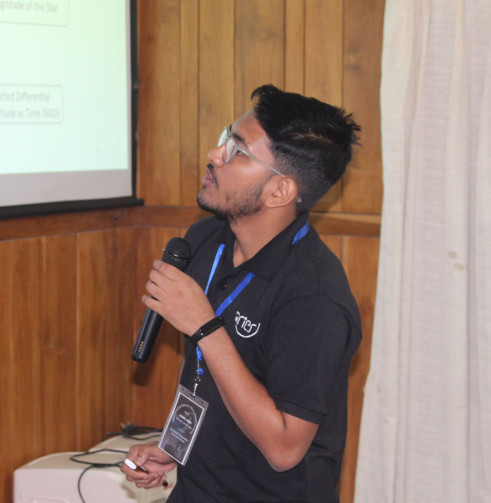

1.Introduction

নমস্কার. I am a PhD student at the Astronomical Observatory of the University of Warsaw, advised by Prof. Łukasz Wyrzykowski and co-advised by Dr. Mariusz Gromadzki. I work on multi-wavelength studies of astrophysical transients and high-energy astrophysics, and at present mostly on core-collapse supernovae that keep shining through interaction with their surroundings (Sect. 2 of the research page).
Alongside the science I help develop BHTOM, a multi-wavelength archival and optical follow-up engine for astrophysical transients. My enthusiasm after a new transient alert is empirically found to follow
the canonical fallback rate of a tidal disruption event, except that every new alert resets t to zero.
2.Origins
I come from Thakurpura, a small village in the district of South Dinajpur, West Bengal, India. I went to school at Barakoil High School and completed my higher secondary studies at Balurghat High School. The path from there to Warsaw is summarised in Table 1.
| Year | Position | Institution |
|---|---|---|
| now | PhD student | Astronomical Observatory, University of Warsaw, Poland |
| 2024 | Research Assistant | High Energy Astrophysics Lab, BHU, with Dr. Raj Prince |
| 2024 | M.Sc. in Physics | Banaras Hindu University, Varanasi, India |
| 2022 | B.Sc. (Hons) in Physics | Malda College, University of Gour Banga, India |
3.Observations away from the telescope
Off duty, the author has been detected in the following channels.
4.Data availability
All material referred to here is publicly available at the following locations.
- ORCID
- 0009-0008-3960-1213
- NASA ADS
- Public library
- Google Scholar
- Profile
- ResearchGate
- Joysankar-Majumdar
- GitHub
- joysankar-astro
- joysankar2001
- joy_kozmic
Acknowledgements. I thank my advisors Ł. Wyrzykowski and M. Gromadzki for my first steps in transient astronomy, R. Prince for my first steps in high-energy physics, and the observers of the BHTOM network.
- Kolkata biriyani is the best. ↩